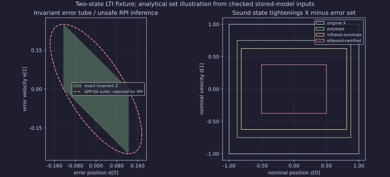
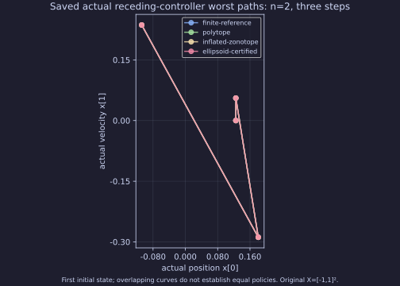
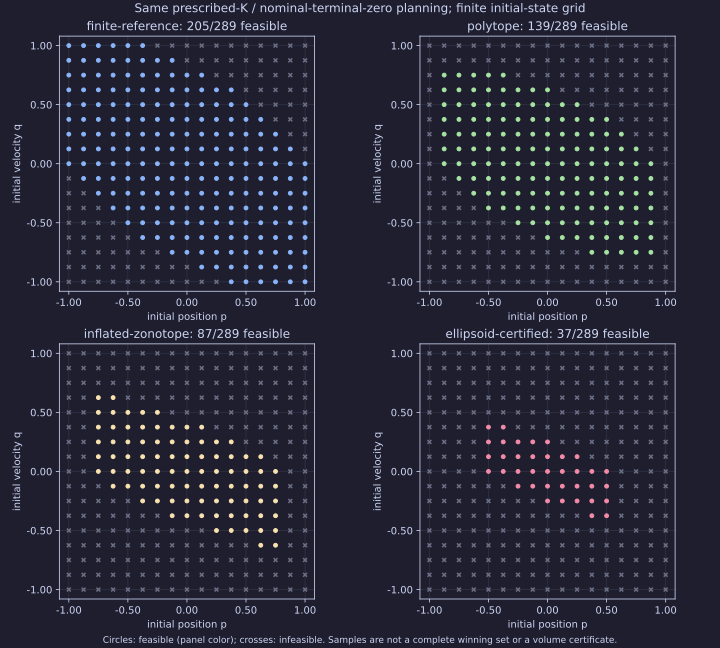

Affine LTI A=[[1,1],[0,1]], B=E=(0,1), X=[-1,1]², U=[-1,1], W=[-1/8,1/8]. State dimension two; exact full-state feedback and continuous actuators. The prescribed K=(-1,-2) makes F²=0. Initial states are (1/8,0), (3/8,-1/8), (-1/4,1/8), with initial error zero. LTV, model/correlated uncertainty and finite actuators remain unsupported.
Native capture source 7e08f9196504488fde4d28bb62ff5030af64fe2f; reference/reading source bb386027fa3f22303750cd73be261b0b55f1fa01. Independent verification: 6 exact class minima and 60 matched held native plans. Exact results and certificates; verification; bound native-capture receipt; publication manifest.
M0 chooses one fixed actual open-loop plan. The fixed-K reference chooses one nominal plan and applies u=v+K(x-z), retaining that plan for three steps. Both require nominal z3=0, so v=(a,-p-3q-2a,p+2q+a). They minimize the actual continuous-disturbance worst cost sum(x_t²+u_t²)+x3², computed from all eight disturbance vertices. Each path cost has common positive quadratic coefficient 9 in a. Exact rational envelope candidates and an independent active-subgradient/endpoint certificate prove each reported class minimum. These are distinct restricted policy classes; no cross-class bound ordering or general causal optimum is asserted.
The native MPC minimizes a nominal surrogate and reoptimizes a propagated anchor each step. To compare with the frozen-plan K reference, we hold its FIRST predicted native plan for three steps. Those matched gaps are nonnegative. Its actual three executed receding steps have different terminal/tail semantics and are reported separately, never treated as a minimax optimality gap.
| Initial (p,q) | M0 optimum a / worst J | Fixed-K optimum a / worst J | Held native worst J range | Matched K gap range | Actual receding-prefix J range |
|---|---|---|---|---|---|
| ['1/8', '0'] | -5/72 / 263/576 | -1/11 / 1663/3872 | [0.484375, 0.484375] | [0.0548812, 0.0548812] | [0.430447, 0.430447] |
| ['3/8', '-1/8'] | -1/36 / 205/288 | -5/88 / 5087/7744 | [0.729167, 0.729167] | [0.072271, 0.072271] | [0.643277, 0.643277] |
| ['-1/4', '1/8'] | -1/24 / 33/64 | -3/88 / 3755/7744 | [0.505208, 0.505208] | [0.0203168, 0.0203168] | [0.492149, 0.492149] |
Exact polytope/parallelotope/zonotope descriptions preserve the same Z. The inflated zonotope and independently certified ellipse are outer invariant tubes. The coordinate box and actual APP-04 outer ellipse contain Z but fail RPI and are rejected with rational successor witnesses. Set volume alone is not evidence. The original pilot and its fixed-policy 3/8 result remain immutable.

These are actual saved three-step receding-controller worst histories for the first initial state, not the frozen-plan references. Renderers execute no optimization.

Finite-error and invariant-tube intervals retain identical prescribed-K and nominal-terminal-zero semantics. The 17x17 grid reports conservatism, not a complete state-feedback winning set. Unsafe disturbance paths are rejected rather than clipped.

The saved native record separates APP-04 offline construction, online preparation/setup/solve, exact construction/checking and process observations. K is prescribed, not optimized. The new exact-reference cost receipt separates construction plus extraction from independent checking. These are single descriptive Python intervals, excluding upstream loading. The historical nilpotent Z/terminal proof has no isolated construction timing; unavailable values are not zero-cost claims. Native distributions remain descriptive and inconclusive for performance ranking; no universal winner or hard real-time claim is made.
Build/recheck the source at the recorded revision using python scripts/reports/mpc06_delivery/records.py --check <saved-input>. Pinned Matplotlib 3.11.2 and the shared quantitative axis policy generate these figures from checked saved inputs. Full sources, prior raw stdout/stderr and exact certificates are in the input bundle. No native solve is run during checking, plotting or staging.
HiGHS 1.11.0 remains the existing optional MIT QP integration; no acados or new solver is installed. This source/report delivery adds no public API, package layout or installed binary. Existing GCC/Clang/MSVC native smoke qualifications remain those actually exercised by PR #899; no new binary-distribution or license approval is inferred. The project distribution-license decision remains separate. Numerical optimum evidence is distinct from exact stored-value safety/reference proof. Publication requires independent review, main-only stale-head checks and live URL verification; #602 remains open until the completion audit.